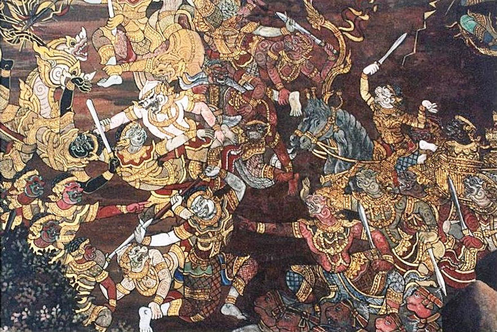

mailto:payer@payer.de
Zitierweise | cite as:
Payer, Alois <1944 - >: Sanskritkurs. -- Lösung der Übungen. -- Übungen Lektion 58 - 60. -- Fassung vom 2009-03-12. -- URL: http://www.payer.de/sanskritkurs/uebung58.htm
Erstmals hier publiziert: 2009-03-12
Überarbeitungen:
Anlass: Lehrveranstaltungen 1980 - 1984
©opyright: Dieser Text steht der Allgemeinheit zur Verfügung. Eine Verwertung in Publikationen, die über übliche Zitate hinausgeht, bedarf der ausdrücklichen Genehmigung des Verfassers
Dieser Text ist Teil der Abteilung Sanskrit von Tüpfli's Global Village Library
Falls Sie die diakritischen Zeichen nicht dargestellt bekommen, installieren Sie eine Schrift mit Diakritika wie z.B. Tahoma.
Die Devanāgarī-Zeichen sind in Unicode kodiert. Sie benötigen also eine Unicode-Devanāgarī-Schrift.
A) Bestimmen und übersetzen Sie ohne Hilfsmittel folgende Formen und bilden Sie die entsprechenden Formen des i-Aorist:
आनर्च - अर्च् 1P verehren 1.3.sg.2.pl.Perf.P - आर्चिषम् । आर्चीत् । आर्चिष्ट
Abb.: तब्लाः,
अनदिष्ट ॥
[Bildquelle: Kaustav Bhattacharya. --
http://www.flickr.com/photos/astrolondon/224826916/. -- Zugriff am
2009-03-12. --
Creative
Commons Lizenz (Namensnennung, keine kommerzielle Nutzung, keine
Bearbeitung)]
B) Übersetzen und bestimmen Sie folgende Formen:
Abb.: मातुलङ्गविक्रेतायं ना ॥
Pune - पुणे
[Bildquelle: Anushruti RK. --
http://www.flickr.com/photos/anushruti/1724235028/. -- Zugriff am
2009-03-12. --
Creative
Commons Lizenz (Namensnennung, keine kommerzielle Nutzung, keine
Bearbeitung)]
Abb.: श्वा श्वानमघ्रात् ॥
Hampi - ಹಂಪೆ
[Bildquelle: Laertes. --
http://www.flickr.com/photos/jonhurd/2367038594/. -- Zugriff am 2009-03-12.
-- Creative Commons
Lizenz (Namensnennung)]

Abb.: रावणः
Yakshagana = ಯಕ್ಷಗಾನ
[Bildquelle: Ganapiti / Wikipedia. GNU FDLicense]
A) Übersetzen Sie den folgenden Text und bestimmen Sie alle darin vorkommenden Verbalformen.
Die Übersetzung ist bewusst holprig gelassen, um als Übersetzungshilfe zu dienen.
Übersetzungshilfe: Vers 6: दिदृक्षते = Desiderativ zu दृश्
Text aus: Otto Böhtlingk: Sanskrit-Chrestomathie S. 127f.
राक्षसेन्द्रस्ततो ऽभैषीदैक्षिष्ट परितः पुरम् ।
प्रातिष्ठिपच्च बोधार्थं कुम्भकर्णस्य राक्षसान् ॥१॥
Darauf fürchtete sich der Dämonenfürst. Er blicktein der Stadt rundherum und schickte die Rākṣasa, Kumbhakarṇa1 zu wecken.
अभैषीत् - भी Aor. 4 P
ऐक्षिष्ट - ईक्ष् Aor. 5 Ā
प्रातिष्ठिपत् - प्र-स्था unregelm. (siehe Pāṇini 7.4.5) Aor. 31 Kumbhkarṇa, der Bruder Rāvaṇas, liegt als Strafe für seine Übeltaten im Dauerschlaf
ते ऽभ्यगुर्भवनं तस्य सुप्तं चैक्षिषताथ तम् ।
व्याहार्षुस्तुमुलाञ्छब्दान्दण्डैश्चावधिषुर्द्रुतम् ॥२॥
Diese gingen zu dessen Haus und erblickten diesen schlafend. Sie riefen tumultöse Laute und schlugen schnell mit Stöcken.
अभ्यगुर् - अभि-गा (für इ) Aor. 1 P
अक्षिषत - ईक्ष् Aor. 5 Ā (3.pl.)
व्याहार्षुर् - वि-आ-हृ aussprechen, sagen Aor. 4 P
अवधिषुर् - वध् (statt हन्) Aor. 5
केशानलुञ्चिषुस्तस्य गजान्गात्रेष्वभिभ्रमन् ।
शीतैरभ्यषिचंस्तोयैरलातैश्चाप्यदम्भिषुः ॥३॥
Sie zerrten seine Haare, ließen Elefanten auf seinen Gliedern herumirren; sie besprengten ihn mit kaltem Wasser und verletzten ihn mit Feuern.
अलुञ्चिषुर् - लुञ्च् Aor. 5
अबिभ्रमन् - भ्रम् Kaus. Aor. 3
अभ्यषिचन् - सिच् Aor. 2
अदम्भिषुर् - दम्भ् Aor. 5
नखैरकर्तिषुस्तीक्ष्णैरदाङ्क्षुर्दशनैस्तथा ।
शितैरतौत्सुः शूलैश्च भेरीश्चावीवदञ्छुभाः ॥४॥
Sie schnitten ihn mit scharfen Fingernägeln und sie bissen ihn mit den Zähnen, sie schlugen ihn mit scharfen Spießen und sie ließen helle Trommeln ertönen.
अकर्तिषुर् - कृत् Aor. 5
अदाङ्क्षुर् - दंश् Aor. 4
अतौत्सुर् - तुद् Aor. 4
अवीवदन् - वद् Kaus. Aor. 4
स तान्नाजीगणत्सर्वानिच्छयाबुद्ध च स्वयम् ।
अबूबुधत कस्मान्मामप्राक्षीच्च निशाचरान् ॥५॥
Er beachtete diese alle nicht, durch Wunsch erwachte er selbst und er fragte die Nachtwandler: "Warum habt ihr mich geweckt?"
अजीगणत् - गण् 10 Aor 3
अबुद्ध - बुध् Aor 4 (neben अबोधि)
अबुबूधत - बुध् Kaus. Aor. 3 (2.pl.P)
अप्राक्षीत् - प्रछ् Aor 4
ते ऽभाषिषत राजा त्वां दिदृक्षुः क्षणदाचर ।
सो ऽस्नासीद्व्यलिपन्मांसमप्सासीद्वारुणीमपात् ॥६॥
Diese sprachen: "Der König ist begierig, dich zu sehen, Nachtwandler!" Er badete, cremte sich, verschlang Fleisch, trank Palmschnaps;
अभाषिषत - भाष् Ā Aor. 5
अस्नासीत् - स्ना Aor. 6
व्यलिपत् - वि-लिप् Aor. 2
अप्सासीत् - प्सा Aor. 6
अपात् - पा Aor. 1
न्यवसिष्ट ततो द्रष्टुं रावणं प्रावृतद्गृहात् ।
राजायान्तं तमद्राक्षीदुदस्थाच्चेषदासनात् ॥७॥
Er zog sich an, dann ging er von zuhause weg, um Rāvaṇa zu sehen. Der König sah in kommen und stand ein wenig vom Sitz auf.
न्यवसिष्ट - नि-वस् 2Ā Aor. 5
प्रावृतत् - प्र-वृत् Ā Aor. 2 P (im Aor. auch P!)
अद्राक्षीत् - दृश् Aor. 4
उदस्थात् - उद्-स्था Aor. 1
अतुषत्पीठमासन्ने निरदिक्षच्च काञ्चनम् ।
अस्मेष्ट कुम्भकर्णो ऽल्पमुपाविक्षदथान्तिके ॥८॥
Er war zufrieden und wies ihm einen goldenen Stuhl in der Nähe an. Kumbhkarṇa lächelte ein wenig und setzte sich dann in die Nähe.
अतुषत् - तुष् Aor. 2
निरदिक्षत् - निर्-दिश् Aor. 7
अस्मेष्ट - स्मि Ā Aor. 4
उपाविक्षत् - उप-विश् Aor. 7
अवादीन्मां किमित्याह्वो राज्ञा च प्रत्यवादि सः ।
नाज्ञासीस्त्वं सुखी रामो यदकार्षीत्स रक्षसाम् ॥९॥
Er sprach. "Warum hast du mich gerufen?" Ihm wurde vom König geantwortet: "Du Glücklicher hast nicht erkannt, was Rāma den Dämonen getan hat.
अवादीत् - वद् Aor. 5
आह्वस् - आ-ह्वे Aor. 2
प्रत्यवादि - प्रति-वद् Passivaorist
अज्ञासीस् - ज्ञा Aor. 6
अकार्षीत् - कृ Aor. 4
उदतारीदुदन्वन्तं पुरं नः परितो ऽरुधत् ।
व्यद्योतिष्ट रणे शस्त्रैरनैषीद्राक्षसान्क्षयम्
॥१०॥
Er hat den Ozean überquert, unsere Stadt rundherum blockiert, er hat in der Schlacht mit Schneidewaffen aufgeleuchtet, er führte die Dämonen zur Vernichtung.
उदतारीत् - उद्-तॄ Aor. 5
अरुधत् - रुध् Aor. 2
व्यद्योतिष्ट - वि-द्युत् Aor. 5
अनैषीत् - नी Aor. 4
न प्रावोचमहं किंचित्प्रियं यावदजीविषम् ।
बन्धुस्त्वमर्चितः स्नेहान्मा द्विषो न वधीर्मम
॥११॥
Ich habe, solange ich lebte, keine Schmeichelei gesagt. Du bist mein aus Liebe verehrter Verwandter. Unterlasse es nicht, meine Feinde zu erschlagen!
प्रावोचम् - प्र-वच् Aor. 3
अजीविषम् - जीव् Aor. 5
वधीस् - वध् Injunktiv Aor. 5
वीर्यं मा न ददर्शस्त्वं मा न त्रास्थाः क्षतां पुरम् ।
तवाद्राक्ष्म वयं वीर्यं त्वमजैषीः पुरा सुरान् ॥१२॥
Unterlasse es nicht, deine Manneskraft zu zeigen, unterlasse es nicht, die die verletzte Stadt zu retten! Wir haben deine Manneskraft gesehen. Du hast früher die Götter besiegt."
ददर्शस् - दृश् Kaus. Injunktiv Aor. 3
त्रास्थास् - त्रै Ā Injunktiv. Aor. 4
अद्राक्ष्म - दृश् Aor. 4
अजैषीस् - जि Aor. 4
अवोचत्कुम्भकर्णस्तं वयं मन्त्रे ऽभ्यधाम यत् ।
न त्वं सर्वं तदश्रौषीः फलं तस्येदमागमत् ॥१३॥
Kumbhakarṇa sprach zu ihm: "Was wir bei der Beratung dargelegt haben, auf all dies hast du nicht gehört. Dies ist als Frucht davon gekommen.
अवोचत् - वच् Aor. 3
अभ्यधाम - अभि-धा Aor. 1
अश्रौषीस् - श्रु Aor. 4
आगमत् - आ-गम् Aor. 2
प्राज्ञवाक्यान्यवामामंस्था
मूर्खवाक्येष्ववास्थिथाः ।
अध्यगीष्ठाश्च शास्त्राणि प्रत्यपत्था हितं न च ॥१४॥
Du hast die Worte der Weisen verachtet, du hast dich auf Worte von Dummen gestellt, du hast die Lehrwerke studiert und bist [trotzdem] nicht zum Heilsamen gegangen.
अवामामंस्थास् - अव-मन् Aor. 4
अवास्थिथास् - अव-स्था Aor. 4
अध्यगीष्ठास् - अधि-इ (अधि-गा) Aor. 4
प्रत्यपत्थास् - प्रति-पद् Aor. 4
मूर्खास्त्वामववञ्चन्त ये विग्रहमचीकरन् ।
अभाणीन्माल्यवान्युक्तमक्षंस्थास्त्वं
न तन्मदात् ॥१५॥
Die Dummen, die den Zwist bewirkten, haben dich getäuscht. Mālyavant1 sprach das Passende. Du hast nicht verziehen aus Rausch gegen ihn.
अववञ्चन्त - वञ्च् Kaus. Aor. 3
अचीकरन् - कृ Aor. 3
अभाणीत् - भण् Aor. 5
अक्षंस्थास् - क्षम् Aor. 41 ein Rākṣasa
राघवस्यामुषः कान्तामाप्तैरुक्तो न चार्पिपः ।
मा नानुभूः स्वकान्दोषान्मा मुहो मा रुषो ऽधुना
॥१६॥
Du hast die Geliebte des Raghunachkommen1 gestohlen. Obwohl es dir von Autoritätspersonen gesagt wurde, hast du sie nicht zurückgeschickt. Hör auf, deine eigenen Fehler nicht wahrzunehmen! Sei nicht wirr, zürne jetzt nicht!
अमुषस् - मुष् Aor. 2
आर्पि्पस् - ऋ Kaus. Aor. 3
अनुभूस् - अनु-भू Injunktiv Aor. 1
मुहस् - मुह् Injunktiv Aor. 2
रुषस् - रुष् Injunktiv Aor. 21 Rāma
तस्याप्यत्यक्रमीत्कालो यत्तदाहमवादिषम् ।
अघानिषत रक्षांसि परैः कोशांस्त्वमव्ययीः ॥१७॥
Für das, was ich dir damals sagte, ist der rechte Zeitpunkt vergangen. Die Rakṣas wurden von den Feinden getötet. Du hast die Schätze verloren.
अत्यक्रमीत् - क्रम् Aor. 5
अवादिषम् - वद् Aor. 5
अघानिषत - हन् Passivaorist 3.pl.
अव्ययीस् - व्यय् Aor. 5
संधानकारणां तेजो न्यगभूत्ते
ऽकृथास्तथा
।
यत्त्वं वैराणि कोशं च सहदण्डमजिग्लपः ॥१८॥
Deine Macht, die Ursache für eine Allianz, wurde niedrig. Du hast so gehandelt, dass du deine Heere und deinen Schatz samt der politischen Macht dahinschwinden machtest."
अभूत् - भू Aor. 1
अकृथास् - कृ Aor. 4/1
अजिग्लपस् - ग्लै Kaus. Aor. 3

Abb.: रामस्य रावणेन युद्धः
Wat Phra Kaew = วัดพระแก้ว,
Bangkok = กรุงเทพฯ
[Bildquelle: Wikipedia. Public domain]
A) Lernen Sie in Kielhorn, Grammatik § 451 die unregelmäßigen Desiderativbildungen zu bisher gelernten Verben
B) Bestimmen und übersetzen Sie ohne Hilfsmittel folgende Formen:
ददुषोः - ददिवांस् Part.Perf.P zu दा 3U Lok.Gen.du.m.n. der beiden / bei den beiden, die gegeben haben
अहिंसीः - हिंस् 7P 2.sg.Aor(5).P du hast verletzt
देमथुः - दम् 4P 2.du.Perf.P ihr beide habt gebändigt
वक्त्वा - वञ्च् 1P Absol. nachdem er gewankt war
अक्षथाः - क्षन् 8U 2.sg.Aor(5/1).Ā du hast im eigenen Interesse verletzt
मुमुषिषिष्यतः - मुष् 9P Desid. 3.du.Fut.P die beiden werden stehlen wollen
अचिक्षंसेथाम् - क्षम् 1Ā Desid. 2.du.Ā ihr beide habt ertragen wollen
अस्नाः - स्ना 2P 2.sg.Impf.P du hast gebadet
जिहिंसुषि - हिंस् 7P Part.Perf.P Lok.sg.m.n. bei dem, der verletzt hat
जिहिंसिषुणा - जिहिंसिषु 3 (zu Desid. von हिंस् 7P) Instr.sg.m.n. durch den, der verletzen will
द्युभिः - दिव् । द्यौ f. Instr.pl. durch die Himmel
जग्लिव - ग्लै 1P 1.du.Perf.P wir beide haben Widerwillen empfunden
अतिस्तीर्षम् - स्तॄ 5/9U Desid. 1.sg.Impf.P ich wünschte, zu streuen
अस्मेष्ठाः - स्मि 1Ā 2.sg.Aor(4).Ā du hast gelächelt
ईशिष्व - ईश् 2Ā 2.sg.Imperativ.Ā herrsche!
रुरुषतुः - रुष् 4/10P 3.du.Perf.P die beiden haben gezürnt
रुरुषुः - रुष् 4/10P 3.pl.Perf.P sie haben gezürnt
रुरुषिषुः - रुरुषिषु (zu Desid. von रुष् 4/10P) Nom.sg.m. einer, der zürnen will
अपिप्रीणताम् - प्री 9U Kaus. 3.du.Aor(3).P die beiden ließen lieben
अपिप्रीषतम् - प्री 9U Desid. 2.du.Impf.P ihr beide wünschtet zu lieben
पिप्रियतुः - प्री 9U 3.du.Perf.P die beiden haben geliebt
तिस्रः - त्रि Nom.Akk.Vok.f. drei
अदांक्ष्टाम् - दंश् 1P 3.du.Aor(4).P die beiden haben gebissen
असिसीर्ष्यत - सृ 1/3P Desid. 3.sg.Impf.Pass. es wurde laufen gewollt
बभासाते - भास् 1Ā 3.du.Perf.Ā die beiden leuchteten
बिभासिषेथे - भास् 1Ā Desid. 2.du.Ind.Präs.Ā ihr beide wollt leuchten
अबीभणत - भण् 1P Kaus. 2.pl.Aor(3).P ihr habt schildern lassen
चकर्त - कृत् 6P 1.3.sg.Perf.P ich habe / er hat geschnitten
चकर्थ - कृ 8U 2.sg.Perf.P du hast gemacht
दिद्युते - द्युत् 1Ā 1.3.sg.Perf.Ā ich habe / er hat geleuchtet
दिद्युतिषे - द्युत् 1Ā Desid. 1.sg.Ind.Präs.Ā ich wünsche zu leuchten
चुच्यूषवे - चुच्यूषु (zu Desid. von च्यु 1Ā) Dat.sg.m.n. dem, der sich zu bewegen wünscht
दित्सामि - दा 3U Desid. 1.sg.Ind.Präs.P ich wünsche zu geben
अचीकृतम् - कॄत् 10P 1.sg.Aor(3).P ich habe gepriesen ; कृत् 6P Kaus. 1.sg.Aor(3).P ich ließ schneiden
विजिगीषौ - विजिगीषु (zu Desid. von वि-जि) Lok.sg.m.n. beim Eroberungsbegierigen
पित्सेथे -पद् 4Ā Desid. 2.du.Ind.Präs.Ā ihr beide wünscht zu schreiten
उदीचि - उदञ्च् 3 Lok.sg.m.n. im nördlichen
संगणय्य - सम्-गण् 10P Absol. nachdem er zusammengezählt hat
अतिस्तराव - स्तॄ 5/9U Kaus. 1.du.Aor(3).P wir beide ließen streuen
त्रिलोक्याः - त्रिलोकी f. Ab.Gen.sg. (aus) der Dreiwelt
अहः - अहन् n. Nom.Akk.sg. der / den Tag
जग्मुषः - जग्मिवांस् । जगन्वांस् Part.Perf.P zu गम् 1P Ab.Gen.sg.m.n.Akk.pl.m. dessen, der gegangen ist ...
अताप्स्व - तप् 1P 1.duAor(4).P wir beide glühten
ईशिशिषाञ्चक्रे - ईश् 2Ā Desid. 1.3.sg.PeriphPerf.Ā ich / er wünschte zu herrschen
ईशाञ्चक्रे - ईश् 2Ā 1.3.sg.PeriphPerf.Ā ich / er herrschte
ईशयाञ्चक्रे - ईश् 2Ā Kaus. 1.3.sg.PeriphPerf.Ā ich / er ließ im eigenen Interesse herrschen
षण्णाम् - षष् Gen. der sechs
अघुक्षम् - गुह् 1U 1.sg.Aor.P ich habe verborgen
अष्टौ - अष्टन् Nom.Akk.Vok. acht
प्साथः - प्सा 2P 2.du.Ind.Präs.P ihr beide verschlingt
अवाचः - अवाञ्च् 3 Abl.Gen.sg.m.n.Akk.pl.m. des abwärts gerichteten ...
ईयुषे - ईयिवांस् Part.Perf.P zu इ 2P Dat.sg.m.n. dem, der gegangen ist
Abb.: अहं युष्माकमआकं
हृदयेषु दिद्युतिषे ॥
Alois Payer
ENDE DER ÜBUNGEN